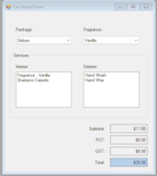
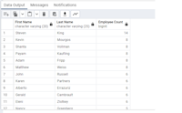

Skills
-
CSS, HTML, JavaScript:
This site was created by yours truly, using these 3 web based languages.
-
C#, Java:
Experienced in C# and Java. I have created a Windows Form application in C# that involved data binding, ADO.net objects, and DataSet work
-
SQL:
I can search, create, update data in a database using SQL. I learned these skills using the PostGres application